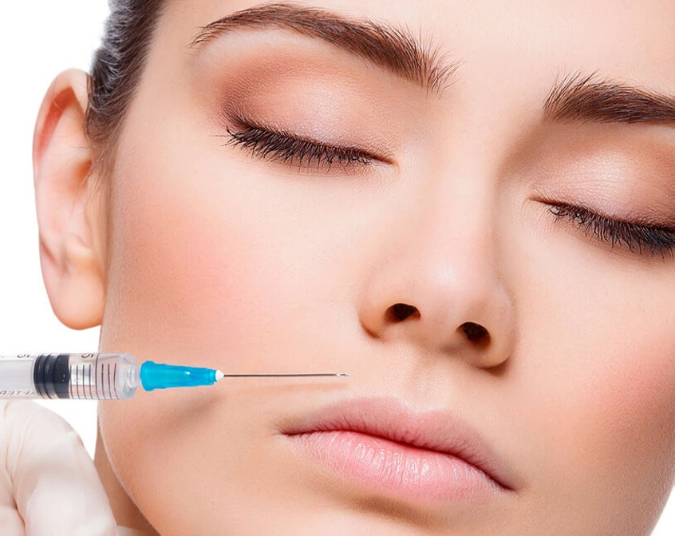
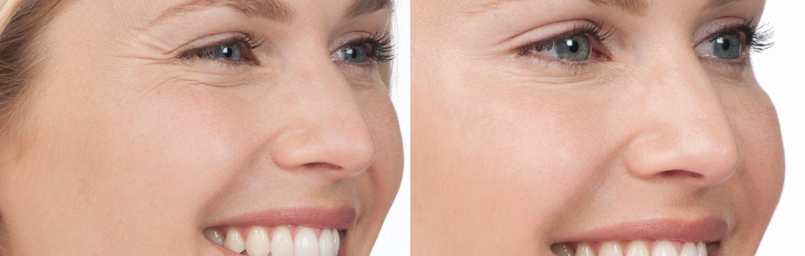
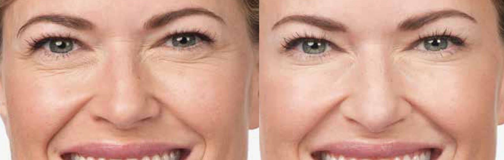
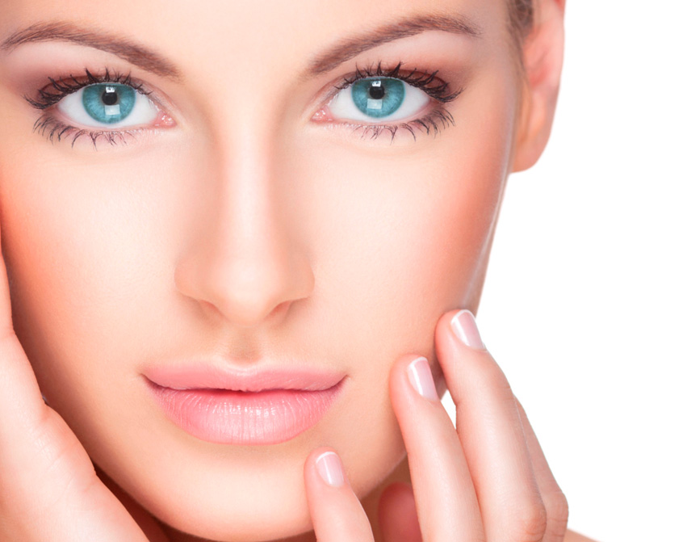

Con el paso del tiempo ciertas zonas del rostro van perdiendo volumen con la consecuente aparición de arrugas peribucales, surco nasogeneano, labios, marionetas. El ácido hialurónico es un material natural que provoca una reestructuración del tejido devolviéndole su lozanía, hidratación y aspecto juvenil. Se trata de un procedimiento sencillo y ambulatorio. Sus resultados se ven de manera inmediata y duran aproximadamente 18 meses. Todos los ácidos hialurónicos son seguros de utilizar, se absorben completamente, por lo cual su efecto es totalmente reversible y se encuentran avalados por todas las asociaciones médicas internacionales.

Como funciona
Previo haber limpiado el rostro y aplicado una pomada anestésica o frío local, se realizan pequeñas infiltraciones de ácido hialurónico que se deposita en las arrugas e inmediatamente rellena los pliegues de la piel. Este procedimiento dura aproximadamente 15 minutos. Los ácidos hialurónicos más pesados se utilizan en zonas con mayor pérdida de volumen, pómulos y marionetas, los intermedios en surcos nasogeneanos, los más flexibles en labios y los livianos en ojeras, bolsas y arrugas peribucales.
Resultados de nuestros Tratamientos


Microdermoabrasion con puntas de diamantes
Tratamiento
Este tratamiento consiste en un pulido profundo de la piel que estimula la regeneración celular eliminando células muertas y con ellas las manchas e imperfecciones. Este peeling mecánico trabaja las capas superficiales de la piel devolviendo el brillo perdido por la edad y eliminando las impurezas.

Como funciona
Al comenzar la sesión y luego de limpiar la piel, se pasan las puntas de diamante con una leve presión que junto con una suave succión negativa trabajan la capa superficial de la piel eliminando arrugas, manchas, imperfecciones y cicatrices; además mejora la circulación y el drenaje linfático. Dependiendo del grosor de la piel a tratar utilizaremos puntas más gruesas o más finas asegurándonos de esta forma el mejor resultado. La sesión dura alrededor de 20 minutos durante la cual el paciente tiene la sensación de un masaje facial ya que el tratamiento es totalmente placentero, el resultado es inmediato dejando la piel suave, libre de impurezas recuperando la juventud. El número de sesiones para obtener el resultado ideal es de aproximadamente 6 con una frecuencia semanal.
Las microdermabrasión con puntas de diamante es un tratamiento totalmente seguro, exento de complicaciones, totalmente indoloro y sin tiempo de recuperación.